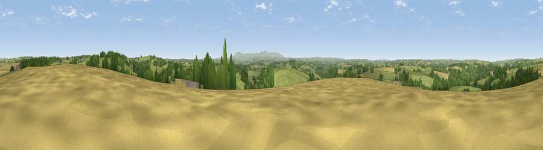

Viewpoint near Iddesleigh
#16787 in England · top 24% of its area beats it · near IddesleighThe view, rendered

A 360° render of this exact spot computed from the terrain model, tree cover and land cover — summer colours, afternoon light, calibrated against photographs of famous viewpoints. Real trees, hedges and buildings will differ in detail.
The panorama
Grey silhouette: terrain skyline in each direction (720 bearings, Earth curvature and refraction included). Dashed green: skyline with trees (+15 m) and buildings (+8 m) as obstacles. Blue strip: how far the ground is visible on each bearing.
Where the view opens
Wedge length = distance to the farthest visible ground on that bearing (vegetation-aware). Rings at 10, 25 and 50 km.
What fills the view
66% grassland · 17% woodland · 17% cropland
Angular shares of the visible panorama (visual magnitude), not map area. Landscape diversity 0.39 (0–1 Shannon).
Key numbers
More beautiful places nearby
The staircase of upgrades: each row has a higher view potential than everything closer. Driving times are estimates from straight-line distance, calibrated against real road routing — check an actual route before setting out.
| Place | Direction | Drive | Score |
|---|---|---|---|
| Viewpoint near Iddesleigh | E · 3 km | ~7 min | 61.0 |
| Viewpoint near Petrockstowe | W · 7 km | ~15 min | 65.5 |
| Viewpoint near Burrington | NE · 11 km | ~21 min | 66.4 |
| Viewpoint near High Bullen | NNW · 13 km | ~23 min | 71.2 |
| Viewpoint near Sticklepath | SSE · 18 km | ~30 min | 73.5 |
| Viewpoint near Okehampton | S · 18 km | ~32 min | 74.5 |
| Viewpoint near South Zeal | SSE · 19 km | ~33 min | 75.0 |
| Yes Tor | S · 19 km | ~33 min | 78.5 |
50.86603, -4.04022 · source: screening · position refined by local search. Computed location — check access rights before visiting.